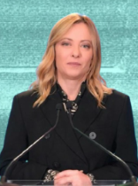
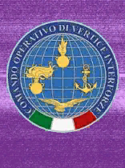
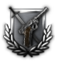

1. Header & Flavor Quotes
Starting Name: Italian Republic (ITA)
Starting Leader: Giorgia Meloni (Centro-Destra: Fratelli d'Italia, Forza Italia, Lega).
Role in the civil war: the legitimate government in Rome. Two days after the collapse the Armed Forces Joint Command (Comando Interforze F.F.A.A.) takes power.
Focus Tree & Path Overview
Italy is split into the factions of its civil war, and every path of the Italian focus tree leads to one of them. This page covers what stays Italian Republic: the parliamentary Democratic Spectrum, the House of Savoy restoration and the government side of the civil war.
| Path | Faction | Page |
|---|---|---|
| Democratic Spectrum (elections of 2027) | Italian Republic (ITA) | this page |
| Good old Days → Casa Savoia! (Kingdom of Italy) | Italian Republic (ITA) | this page |
| On the Side of the Proletariat → Leninist and Trotskyist Alliance | The Internationale (INT) | INT |
| On the Side of the Proletariat → Hardline communist | Socialist Republic of Italy (SRI) | SRI |
| Good old Days → Second March on Rome | Italian Social Republic (RSI) | RSI |
| Civil war only | Padania (LOM), South Tyrol (TYR) | LOM |
2. Technical Infobox & Prerequisites
| Field | Value |
|---|---|
| Country Tag | ITA |
| Capital | Rome (state 2) |
| Ruling party (start) | conservative – Centro-Destra (Fratelli d'Italia, Forza Italia, Lega) |
| Elections | allowed, every 60 months (last: 25 September 2022) |
| Stability / War Support | 65% / 40% |
| Research slots | 4 |
| Starting laws | Limited Exports, Volunteer Only, Civilian Economy |
| Focus Tree ID | italian_focus |
| Starting popularity | % |
|---|---|
| Liberal (Campo Largo) | 34 |
| Conservative (Centro-Destra) | 31 |
| Progressive (PSI) | 8 |
| Authoritarianism (Lega) | 6 |
| Autocracy (FF.AA.) | 4 |
| Reactionary (FN) | 4 |
| Vanguard Socialism (Lotta Comunista) | 3 |
| Revolutionary Socialism (PCR) | 3 |
| Ultranationalism (CP-FN) | 3 |
| Totalitarian Socialism (PdRC, PC) | 2 |
| Authoritarian Socialism (PaP, CR-OSA) | 2 |
3. Lore & Geopolitical Goals
Background: Italy enters 2025 under Giorgia Meloni's centre-right government while the radical left organises in Genoa's squares and factories. In autumn 2025 Lotta Comunista fills the city for the March Against All Wars, and in December the workers of the former Ilva plant strike against production cuts.
The collapse: when the Republic breaks apart, the Internationale holds the industrial north, the Stalinists rule from Naples, the Black Barons take Latina, and Padania and South Tyrol want nothing more to do with any of them. Rome keeps the centre, the islands and most of the south, and the generals take over.
Goal: hold the Republic together, either through the ballot box in 2027 or under the House of Savoy, and win back every state lost in the civil war.
4. National Spirits & Modifiers
Italy starts with no national spirits, only its laws: limited_exports, volunteer_only and civilian_economy.
Mattei's Mediterranean Plan is meant to add the spirit ITA_mediterranean_investments, but that spirit is not defined in the mod yet.
5. Focus Tree Structure
The Italian tree (italian_focus) has three mutually exclusive roots: On the Side of the Proletariat (to INT or SRI), Democratic Spectrum and Good old Days.
Democratic Spectrum
| Focus | Primary Effect |
|---|---|
| Democratic Spectrum | +5% stability. Root of the parliamentary path. |
| The Left Side / The Right Side | Mutually exclusive. |
| Propaganda in the Neighborhoods (×2) | Left: +17% progressive, or +7% centrist popularity. |
| Political Debates → Hold Conferences | +7% progressive or centrist, then +10% centrist. |
| I AM GIORGIA → I AM A MOTHER, I AM A CHRISTIAN → NON ME LO TOGLIERETE! | Right: +5%, +5%, +10% conservative popularity. |
| Refugees of the Lega → Fascist Sympathies → Our General | Right: +10%, +10%, +20% reactionary popularity. |
| 2027 Election | −100 political power. Unlocks the four results below. |
| Socialist Victory → Francesco De Martino | Progressive government, elections on. |
| Center-Left Victory → Elly Schlein | Centrist government, elections on. +10% stability. |
| Conservative Victory → Giorgia Meloni | Meloni stays (no government change scripted). |
| Futuro Nazionale → Roberto Vannacci | Vannacci's branch (no government change scripted). |
| Minimum Salary, Funds for Schools, Green New Deal | Left economy: stability, civilian factories, +200 political power. |
| Expand the Welfare State, Funding for Healthcare, New Jobs | More stability and civilian factories, +5,000 manpower. |
| Scala Mobile, Revitalizing the Mezzogiorno, Carbon Neutrality | Civilian factories (4, 5 and 5). |
| A Social-Democratic Italy | +100 political power, stability. Final focus of the left. |
| Consolidate the Government, UE NATO Support | Meloni: +5% stability, +75 political power; +20% war support. |
| Protect Made in Italy, Wink at the Army | 2 civilian factories; 6 military factories. |
| Mattei's Mediterranean Plan, Secure the Borders | +50 political power; war support and stability. |
| Italy: Regional Power | +10% war support, +5% stability. Final focus of Meloni. |
| Defend National Values, Connections in the Army | Vannacci: stability; +10 army experience. |
| Popular Appeal, Secure the Borders, Italian Manufacturing, Patriotic to the End | +75 political power, 5 civilian and 5 military factories, war support. |
| New National Republic | Final focus of Vannacci: war support and stability. |
Good old Days: the Kingdom of Italy
| Focus | Primary Effect |
|---|---|
| Good old Days | Reactionary government, elections off. Mutually exclusive with the other two roots. |
| Casa Savoia! | Mutually exclusive with Second March on Rome (see RSI). |
| Reorganize the State → A Loyal Administration → King's Parliament | +5% stability, +75 political power; King's Parliament: −10% stability, +10% war support. |
| Restore the Crown → Emanuele Filiberto di Savoia → King's Industry | +10% stability. |
| Irredentism → Give Istria Back You Thieves! / Give Corsica Back You Thieves! | No effects scripted yet. |
| Irredentism → Traditional Values | +5% war support. Also unlocks The Empire Returns to Rome. |
| The Kingdom Reborn | Final focus, after King's Parliament, King's Industry or Traditional Values (no effects scripted yet). |
6. All Parties & Leaders
| Photo | Leader | Party | Ideology | Icon |
|---|---|---|---|---|
 | Central Committee | PdRC, PC – Partito della Rifondazione Comunista | totalitarian_socialism – stalinismTotalitarian Socialism |  |
| Central Committee | PdRC, PC – Partito della Rifondazione Comunista | totalitarian_socialism – maoismTotalitarian Socialism | |
| General Secretaries | PaP, CR-OSA – Potere al Popolo, Cambiare Rotta | authoritarian_socialism – populist_socialismAuthoritarian Socialism | ||
 | Workers' Councils | Lotta Comunista (Internationalism) | vanguard_socialism – leninist_internationalismVanguard Socialism |  |
 | Central Council | PCR – Partito Comunista Rivoluzionario | revolutionary_socialism – trotskyismRevolutionary Socialism |  |
| Enzo Maraio | PSI – Avanti, Partito Socialista Italiano | progressive – neo_socialismProgressive |  | |
| Elly Schlein | Campo Largo – PD, Verdi e Sinistra, M5S, +E | liberal – social_liberalLiberal | ||
 | Giorgia Meloni | Centro-Destra – Fratelli d'Italia, Forza Italia, Lega | conservative – classical_populismConservative | |
| Matteo Salvini | FN – Futuro Nazionale | reactionary – hardline_conservatismReactionary | ||
| Roberto Vannacci | Lega – Lega Nord | authoritarianism – illiberal_democracyAuthoritarianism | ||
 | Grand Governing Leadership | CP-FN – CasaPound, Forza Nuova | ultranationalism – neo_fascistUltranationalism |  |
| Emanuele Filiberto di Savoia | Casa Savoia – Partito Nazionale Monarchico | absolutism – casa_savoiaAbsolutism | ||
 | Comando Interforze F.F.A.A. | FF.AA. – Forze Armate Italiane (civil war only) | autocracy – military_dictatorshipAutocracy |  |
Other parties: centrist IV, Azione, UdC; fundamentalism PP – Partito Pontificio. President Sergio Mattarella (social liberal) is also recruited at the start.
7. Unique Events & Mechanics
| # | Event | Trigger | Consequence |
|---|---|---|---|
| 1 | March Against All Wars | news, 18 October 2025 (Genoa) | Italy: +5% revolutionary, +5% vanguard, +6% authoritarian socialism |
| 2 | The Strike for Ilva | news, 5 December 2025 (Genoa) | Italy: +2% revolutionary, +6% vanguard socialism |
| 3 | Italy Tears Itself Apart | the civil war starts | The player picks a side: stay with the Republic or play INT, SRI, RSI, LOM or TYR |
| 4 | The Guns Fall Silent, the Generals Speak | 2 days into the civil war | Autocracy government, elections off, +30% autocracy, −5% stability, +5% war support; leader Comando Interforze F.F.A.A. |
The civil war
When the civil war starts Italy leaves its faction (NATO), loses 30% stability, gains 10% war support and declares war on all five breakaway factions. The communists also fight the fascists and each other; Padania and South Tyrol only fight Rome.
| Faction | Tag | States | Capital | Divisions | At war with |
|---|---|---|---|---|---|
| Italian Republic | ITA | 18: Rome, Sardinia (3), Sicily, Abruzzo, Trentino, northern Lombardy, Aosta Valley, Piedmont (2), Friuli-Venezia Giulia, Umbria, northern Lazio, Marche, Molise, Campania-Salerno, Basilicata | Rome | 3 + 8 garrisons | INT, SRI, RSI, LOM, TYR |
| The Internationale | INT | 9: Turin, Milan-Pavia, Liguria, Emilia, Bologna-Romagna, northern and southern Tuscany, Trieste, Taranto | Genoa | 36 | ITA, SRI, RSI |
| Socialist Republic of Italy | SRI | 3: Naples, Puglia, Calabria | Naples | 16 | ITA, INT, RSI |
| Italian Social Republic | RSI | 1: Latina | Latina | 14 | ITA, INT, SRI |
| Padania | LOM | 3: eastern Lombardy, Padania, Veneto | Veneto | 8 | ITA |
| South Tyrol | TYR | 1: South Tyrol | Bolzano | 4 | ITA |
The six-faction civil war (ITA, INT, SRI, RSI, LOM, TYR) is in the mod but, in the current version, it can only be started from the debug decisions: no focus triggers it yet.